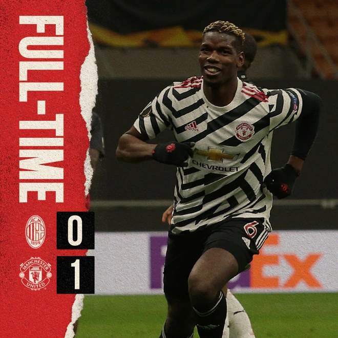
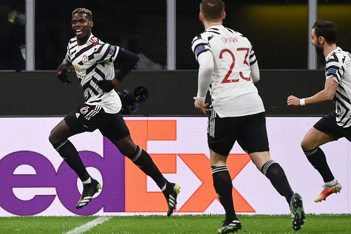
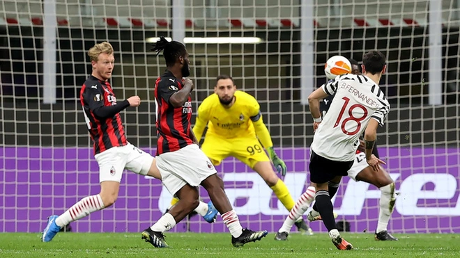
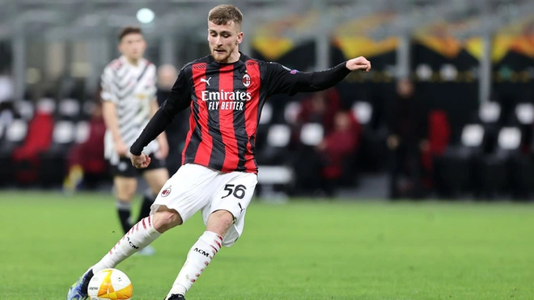
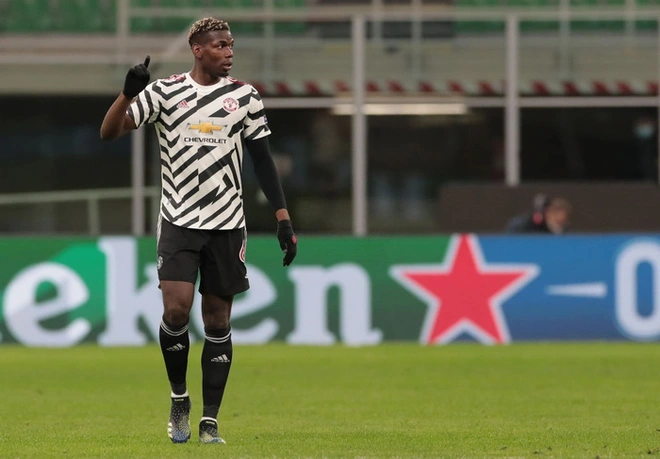
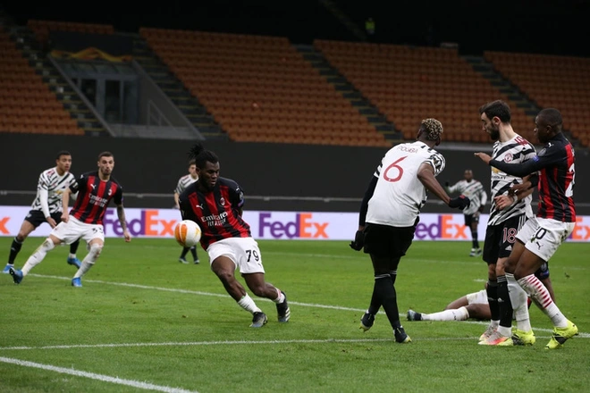
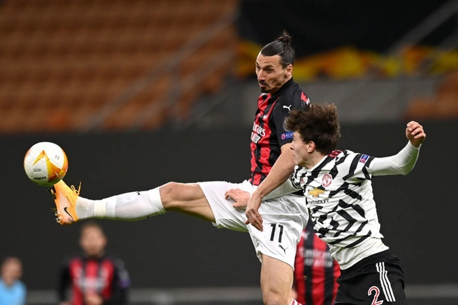
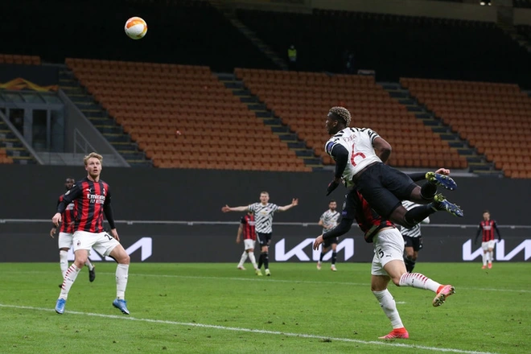

Pogba trở lại và ghi bàn đưa MU vào Tứ kết Europa League
Sự có mặt của Pogba lập tức tạo nên tác động rõ rệt và giúp MU hạ AC Milan với tỷ số tối thiểu 1-0 ngay trên sân khách ở trận lượt về vòng 1/8 Europa League.

Rạng sáng 19/3, Manchester United vất vả hạ AC Milan với tỷ số tối thiểu 1-0 ngay trên đất Italy trong trận lượt về vòng 16 đội Europa League để tiến vào Tứ kết với tổng tỷ số chung cuộc 2-1

Paul Pogba chính là người hùng của MU trận này khi tiền vệ người Pháp chỉ cần vài phút sau khi vào sân trong hiệp hai để tạo nên khác biệtBàn thua trên sân nhà trong trận lượt đi buộc MU phải dâng cao từ đầu để tìm kiếm bàn thắng. Mặc dù vậy, những đường tấn công của MU tỏ ra khá đơn giản và dễ đoán khi bóng đều phải qua chân Bruno Fernandes

Cũng chính tiền vệ người Bồ Đào Nha được trao cơ hội ngon ăn đầu tiên trong trận đấu ở phút 12 sau một nỗ lực đi bóng của Luke Shaw nhưng lại dứt điểm vọt xà trước vạch 16m50

Cũng chính tiền vệ người Bồ Đào Nha được trao cơ hội ngon ăn đầu tiên trong trận đấu ở phút 12 sau một nỗ lực đi bóng của Luke Shaw nhưng lại dứt điểm vọt xà trước vạch 16m50Trong khi MU thi đấu mờ nhạt, AC Milan mới là đội mở ra những cơ hội tốt nhất trong 45 phút đầu tiên. Phút 41, Alexis Saelemaekers tung ra cú nã đại bác tầm xa trong tư thế khá thoải mái không ai theo kèm. Rất may cho MU khi thủ môn Dean Henderson đã thi đấu tập trung

Trong khi MU thi đấu mờ nhạt, AC Milan mới là đội mở ra những cơ hội tốt nhất trong 45 phút đầu tiên. Phút 41, Alexis Saelemaekers tung ra cú nã đại bác tầm xa trong tư thế khá thoải mái không ai theo kèm. Rất may cho MU khi thủ môn Dean Henderson đã thi đấu tập trungSự đơn điệu của MU ở 1/3 cuối sân buộc HLV Solskjaer phải có sự thay đổi về nhân sự. Ngay đầu hiệp hai, Pogba được tung vào sân để thay thế cho Marcus Rashford, người vẫn đang vật lộn với chấn thương mắt cá. Sự thay đổi này cũng chính là bước ngoặt cho trận đấu

Phút 47, MU thực hiện pha phối hợp trong vòng cấm AC Milan. Bóng đến chân Daniel James nhưng cú sút của cầu thủ này bị hậu vệ bên phía Milan ngăn cản. Quả bóng văng ra và Fred lại sút hỏng ăn nhưng tiền vệ của MU đã tắc bóng ngay trong chân Kessie. Ở cự ly chưa đến 5 m, Pogba sút tung nóc lưới thủ môn Donnarumma đem về bàn thắng quý giá cho MU

Phút 47, MU thực hiện pha phối hợp trong vòng cấm AC Milan. Bóng đến chân Daniel James nhưng cú sút của cầu thủ này bị hậu vệ bên phía Milan ngăn cản. Quả bóng văng ra và Fred lại sút hỏng ăn nhưng tiền vệ của MU đã tắc bóng ngay trong chân Kessie. Ở cự ly chưa đến 5 m, Pogba sút tung nóc lưới thủ môn Donnarumma đem về bàn thắng quý giá cho MU

AC Milan gây sức ép khủng khiếp vào khoảng thời gian cuối trận nhưng đoàn quân của HLV Ole Gunnar Solskjaer vẫn có thể đứng vững và bảo toàn thành quả. Thậm chí nếu may mắn hơn, Pogba đã có thể lập cú đúp bàn thắng khi pha đánh đầu dũng mãnh của anh ở phút 88 đưa bóng đi vọt xà trong gang tấc